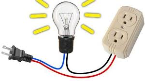
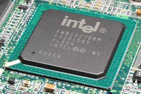

¿Qué es la Electricidad?

Es un conjunto de fenómenos producidos por las cargas eléctricas positivas y negativas en los cuerpos físicos.
Fuente de Voltaje

Dispositivo que convierte la red alterna en una o varias tensiones prácticamente continuas. Tipos:
- Fuente de corriente directa
- Fuente de corriente alterna
Corriente

Medida de la cantidad de electrones que pasan por un punto del circuito durante un tiempo determinado.
Voltaje

Medida de la fuerza eléctrica necesaria para impulsar una corriente a través de un circuito.
Resistencia
Es toda oposicion que encuentra la corriente a su paso por un circuito electrico cerrado frenando el libre flujo
Esta formada por componentes electricos que introducen una resistencia electrica determinada entre dos puntos de un circuito. Ademas es una unidad de la capacidad que presenta un elemento en un circuito para oponerse al paso de la corriente electrica
Codigo de colores de Resistencias

Las resistencias tienen un cuerpo cilinatio de uno a dos centimetros de longitud con un segmento de alambre a cada lado .
En su superficie tiene tres , cuatro o 5 bandas de colores igualmente espaciadas ma´s cercana a uno de los extremos
Capacitadores o Condensadores
Es un dispositivo capaz de almacenar energia en forma de campo electrico a su vez este componente se encuentra en grandes cantidades de circuitos ele´ctronicos .
Polarizados
No Polarizados
Diodos

Son semiondutores que permiten hacer fluir la electricidad unicamnente en un sentido (Polarizaion directa) en otras palabras , si hacemos circular corriente alterna a traves de un diodo rectificador esto lo hara en la mitad de los semicilos aquellos que polaricen directamente el diodo por lo que a la salida, del mismo obtenemos una señal de tipo pulsatoria pero continua.
LEDs
Son diodos que al pasar corriente emiten luz se utilizan de forma decorativa y como indicadores de proceso , consumen poca ene´rgia ele´ctrica . Tienen dos "patas" el anado(+) y el catado(-)
Transitores

Es un componente ele´ctrico que deja pasar o no las señales electricas a partir de una pequeña señal de mando . Vienen con tres terminales estan se llamnan: emisor, base , conductor, abreviados como a, b ,
Conexiones
Son los puntos donde se realizan el enlace entre diferentes aparatos o sistemas.
El Multimetro
Es un instrumento con el cual se puede realizar mediciones de voltaje, corriente y resistencias entre otras.
Soldador utilizado en Electrónica

Un soldador electrónico o de estaño , es una herramienta utilizado para soldar . Funciona convirtiendo la energía eléctrica en calor , que a su vez provoca fusion del material utilizado en la soldadura , como el estaño.
Tipos de Soldadores

Soldador de lápiz: Es un clasico soldador con forma de ápiz de 30w . Su calentamiento es permanente y posee una alta inercia termica .
Soldador de pistola: Es un soldador en la que la punta se calienta por el efecto de una gran corriente que pasa por ella.
Soportes : Son bases resistentes que necesita el soldador para mantener la punta caliente , sobre esta base y dejarlo durante el tiempo que no se usa y asi evitar quemar la mesa de trabajo .
Soporte tipico para soldadores de poca potencia

Soldadura: Es el proceso de unir las partes de manera que se toquen y se cubran con una gota de estaño funcido una vez enfriada, formara una verdadera union desde el punto de vista electrico.
Estaño: Es una aleacion de estaño con plomo , con una proporcion respectiva del 60% y del 40% que resula ser la mas indicada para las soldaduras eléctricas.
Desoldador de vacio o chupon
Es una bomba de succion que consta de un cilindro que contiene en su interior un embolo acionado por un muelle . Tiene una punta de plastico , que soporta perfectamente las temperaturas utilizadas.
Tarjeta Madre (Motherboard)

Es una tarjeta de circuito impreso sobre el cual se conectan los componentes que forman la computadora
Partes de la Tarjeta Madre

En la actualidad las tarjetas madres de las computadoras se pueden clasificar como tarjetas madres para procesadores Intel y tarjetas madres para procesadores AMD.
Zocalo

Es un sistema electromecanico de soporte y conexion eléctrica , instalado en la placa base que permite la conexion y fijacion del procesador (CPU) a la tarjeta madre. Los Zocalos no son compatibles con todos los procesadores debido a sus funciones eléctricas , mecanicas y sus texturas.
Ranuras para memoria RAM

Es el lugar donde se ensamblan lo diferentes modulos de momoria RAM.
Tipos de memoria RAM:
. Memoria DDR1 : Velocidades hasta 400 MHZ.
.Memoria DDR2: Velocidades hasta 800 MHZ .
.Memoria DDR3 : Velocidades hasta 2000 MHZ.
.Memoria DDR4: Velocidades hasta 4266 MHZ.
Puerto de energia ATX/BTX

A través de este puerto se brinda energia a la tarjeta madre. Este puerto tiene 20 a 24 pines , aqui se conecta la fuente de poder ATX/p BTX.
Conector IDE

Es el lugar donde se conectan las fajas de datos para vincular los discos duros , CD-ROM , DVD-ROM, et, con la tarjeta madre.
Conector SATA
Es el lugar donde se conectan las fajas de datos SATA para vincular los discos duros SATA ,CD-ROM SATA, DVD-ROM SATA , con la tarjeta madre.
Chipset
Es el conjunto de chips que se encargan de controlar algunas funciones corectas del ordenador , como en la forma en que interacciona el microprocesador con la memoria , las tarjetas de expansion , los puertos USB, raton , teclado et.
Bateria

Permite almacenar la configuracion basica de los BIOS aun cuando el ordenador encuentre apagado.
BIOS/UEFI

Es el firmware encargado de iniciar los componentes de hardware y lanzar el sistema operativo de un ordenador cuando lo encendemos al igual que iniciar , configurar ,y comprobar que se encuentre en buen estado el hardware , del ordenador , incluyendo la memoria RAM , los discos duros , la placa base o la tarjeta grafica .
UEFI

Es una especificacion que define una interfaz entre el sistema operativo y el firmware. La interfaz UEFI incluye bases de datos con informacion de la plataforma , inicio y tiempo de ejecucion de los servicios disponibles listos para cargar el sistema operativo.
Ranuras de Expansion

Es donde se conectan las tarjetas adicionales , que se pueden instalar en la tarjeta madre con el proposito de incrementar su operatividad y permitir la actualizacion del hardware de computador .
Existen diferentes tipos de ranuras de expansion , (AGP, CNR, PCI, PI X etc.) pero las mas utilizada actualmente es la ranura PCI Express.
Tarjetas de Expansion

Es un periferico que se inserta en una ranura de expansion y permite extender la capacidad en el procesamiento de datos en un ordenador personal . Los principales tipos de tarjetas de expansion son las tarjetas de video , de sonido , de red , tarjetas empleadas para operar en la sintonizacion de la television o radio.
Tarjeta de Video

Es un dispositivo electronico que se encarga de regular y determinar la forma en como se mostraran las imagenes y texto que se observa en el monitor de la computadora , el televisor o el proyetor. La calidad de la tarjeta de video en una computadora influye sobre todo a la hora de jugar , editar video , trabajar con programas de diseño grafico.
Conectores de una tarjeta de video

Los sistemas de conexion mas habituales entre la tarjeta grafica y el dispositivo visualizador (monitor, proyector o televisor).
Conector DVI: Es una interfaz de video diseñada para obtener la maxima calidad de visualizaion posible en pantallas digitales , tales como los monitores de cristal liquido de pantalla plana y los proyectores digitales.
VGA
Interfase fisica para transmision de señales de video analogicas entre el equipo de computo y diversos tipos de pantalla.
HDMI

Es un puerto que permite transmision de video digital de alta definicion cifrado sin comprension a traves de un mismo cable . Se conectan mediante patillas de contato . Fue ideado iniialmente para televisores y no para monitores
Display Port

Transfiere video a alta resolucion y audio . Sus ventajas son que estan libres de patentes , y por ende de regalias para incorporarlo a los aparatos tambien dispone de unas pestañas para anclar el conector impidiendo que se desconecte el cable accidentalmente.
Tarjeta de sonido
Permite la entrada y salida de informacion en forma de sonido . Se encarga de mejorar la calidad de salida del sonido . A la tarjeta de sonido se le pueden conectar altavoces , auriculares , microfonos , instrumentos etc.
Procesador

El procesador es el cerebro del sistema, justamente procesa todo lo que ocurre en la PC y ejecuta todas las acciones que existen. Cuanto más rápido sea el procesador que tiene una computadora, más rápidamente se ejecutarán las órdenes que se le den a la máquina.
Velocidad
La velocidad de un procesador, o frecuencia de reloj, determina la rapidez con la que el procesador puede ejecutar instrucciones. Se mide en Gigahertz (GHz) y refleja la cantidad de ciclos que el procesador completa por segundo. Una velocidad de reloj más alta significa que el procesador puede procesar más instrucciones y, por lo tanto, la computadora puede funcionar más rápido.
Memoria RAM

La memoria RAM es de tipo aleatorio por que se puede acceder a cualquier byte de memoria sin acceder a los bytes anteriores . Sin duda alguna los , la memoria RAM es la mas comun en los ordenadores de escritorio , portatiles , tablets.
>DIMM SDRAM

Es un módulo de memoria RAM que utiliza una interfaz síncrona para transferir datos. Es el tipo de módulo de memoria más común en computadoras de escritorio y servidores. SDRAM es la tecnología que permite que la memoria opere de forma sincrónica con el reloj del sistema, lo que la hace más rápida y eficiente que la memoria asíncrona.
DIMM DDR

Un DIMM (Dual In-line Memory Module) es un módulo de memoria RAM de doble línea que se utiliza en computadoras y otros dispositivos electrónicos. DDR (Double Data Rate) es una tecnología que permite que la memoria transfiera datos a doble velocidad que la SDRAM
Memoria ROM
Es un tipo de memoria que puede almaenar datos de manera permanente o semi permanente. Es conocida como solo lectura por que es imposible o muy dificil escribir en ella .
Tipos de ROM

PROM : Es un tipo de memoria de solo lectura que puede ser programada una vez por el usuario después de la fabricación del chip. A diferencia de la memoria ROM tradicional, que se programa en fábrica, la PROM permite a los usuarios grabar datos utilizando un dispositivo especial. Una vez programada, los datos de la PROM no pueden ser modificados ni borrados.
EPROM

Es un tipo de memoria no volátil que puede ser programada, borrada y reprogramada
EEPROM
Es una memoria no volátil, lo que significa que mantiene los datos incluso cuando se apaga el dispositivo. Permite borrar y reprogramar bytes individuales de datos utilizando señales eléctricas, a diferencia de la EPROM que requiere luz ultravioleta. Se utiliza para almacenar pequeñas cantidades de datos en dispositivos electrónicos como computadoras y microcontroladores.
Memoria FLASH

es un tipo de memoria de computadora no volátil que permite almacenar datos de forma permanente, incluso sin la fuente de alimentación. Es ampliamente utilizada en dispositivos como memorias USB, tarjetas SD y SSD. La memoria flash se basa en la tecnología NAND (Not And) o NOR (Not Or), y se caracteriza por su capacidad de ser reprogramada eléctricamente.
Case

Es una estructura de metalica o plastica donde se ensambla la placa madre y los diferentes componentes de ella.
Teclado

es un dispositivo de entrada en computadoras que permite al usuario ingresar información al sistema. Es un periférico esencial para interactuar con el ordenador, ya que permite escribir texto, números y símbolos, así como acceder a funciones especiales.
Mouse(Raton)
Es un dispositivo apuntador utilizado para facilitar el manejo de un entorno gráfico en una computadora.
Scanner

dispositivo que digitaliza imágenes o documentos, o a una técnica de lectura rápida para encontrar información puntual en un texto.
Monitor
Monitor">Es un periférico que muestra la información de forma gráfica de una computadora. Los monitores se conectan al ordenador a través de una tarjeta gráfica (o adaptador o tarjeta de video).
Monitores TOUCH

Es un monitor que permite al usuario interactuar directamente con el contenido mostrado tocando, deslizando o arrastrando el dedo o un lápiz óptico sobre la pantalla. Permite controlar el contenido y las funciones de la computadora o dispositivo sin necesidad de un mouse o teclado.
Impresora
Es un dispositivo periférico de salida de una computadora que permite imprimir textos o gráficos en papel u otros medios físicos. Básicamente, una impresora recibe información de una computadora y la convierte en una copia física.
Laser
Es un dispositivo que genera luz mediante un proceso de amplificación óptica. En otras palabras, un láser produce un haz de luz altamente concentrado, coherente y direccional, que se diferencia de la luz común.
Inyección de tinta

Es una tecnología de impresión que utiliza pequeños chorros de tinta para formar imágenes sobre papel o otros materiales. Es ampliamente utilizada en impresoras multifunción y otros dispositivos de marcaje. La tinta se expulsa a través de boquillas o inyectores, y existen diferentes mecanismos para lograrlo, como la tecnología térmica o piezoeléctrica.
Matriz de puntos

Impresoras de agujas: muchas veces denominadas simplemente impresoras matriciales, tienen una matriz de pequeñas agujas que impactan en el papel formando la imagen deseada; cuantas más agujas posea el cabezal de impresión mayor será la resolución
Plotters
Es una impresora especializada que produce gráficos de gran tamaño con alta precisión, como planos, mapas y gráficos técnicos. A diferencia de las impresoras convencionales, los plotters dibujan líneas continuas o realizan cortes siguiendo diseños digitales, lo que los hace ideales para aplicaciones que requieren precisión y detalles.
Sistema continuo de tinta

Es un sistema que permite a una impresora de inyección de tinta utilizar grandes cantidades de tinta sin la necesidad de cambiar constantemente los cartuchos. En lugar de cartuchos desechables, el SCT utiliza tanques de tinta externos conectados a la impresora a través de mangueras, que se rellenan con tinta líquida.
Fuente de ALimentacion (Fuente de Poder)
Es el dispositivo que convierte
Conectores tipo molex

Un conector Molex de cuatro pines sirve principalmente para proporcionar el suministro eléctrico necesario a dispositivos de relativamente bajo consumo como serían discos duros o unidades lectoras o grabadoras de CD y DVD.
Conector ATX de 4 pines

Este conector se conecta a la tarjeta madre para brindar energia a la CPU. Los cables estan codificados con olor negro para las lineas de señal COM y amarillo para las lineas de 12 voltios.
Conector EPS 8 pines

Tiene las mismas funciones que el conector ATX de 4 pies , pero pensando para para estaciones de trabajo que en la placa tienen mas de un procesador y por tanto necesitan una cantidad adicional de canales a 12v.
Discos Externos

Es un dispositivo de almacenamiento de datos que se conecta a una computadora desde afuera, a diferencia de los discos duros internos que están dentro de la computadora. Es portátil, lo que significa que puedes llevarlo contigo y conectarlo a diferentes computadoras para acceder a tus archivos.
Dispositivos de almacenamiento óptico

Es un medio de almacenamiento de datos que utiliza tecnología óptica para leer y escribir información. Estos discos utilizan un rayo láser para codificar y decodificar datos, lo que permite almacenar grandes cantidades de información de manera compacta. Los tipos más comunes son los discos compactos (CD), los discos versátiles digitales (DVD) y los discos Blu-ray.
Archivos ISO
Es una imagen de disco que contiene una copia exacta del contenido de un CD, DVD o Blu-ray. Se utiliza para almacenar datos, incluyendo archivos, carpetas, sistemas de archivos y la estructura del disco.
Crear una USB booteable

Convertir una memoria USB en un medio de arranque para un ordenador. Esto implica que la memoria puede ser utilizada para iniciar el sistema operativo, instalar un nuevo sistema operativo, o incluso arrancar herramientas de diagnóstico y reparación.
Maquinas Virtuales

Es una simulación, o réplica, de una computadora física que se ejecuta en un entorno virtual. En otras palabras, es un software que crea una máquina (PC, servidor, etc.) virtualizada, que se comporta como una computadora real, pero que se ejecuta dentro de otra computadora física, el host.
Mantenimiento Preventivo

Se refiere al conjunto de actividades programadas de antemano y encaminadas a reducir el impacto de fallos en el hardware y el software , con la unica intencion de maximizar la utilizacion del mismo , antes de ser reparado.
Particion de Disco Duro

Es la división lógica de un disco físico en secciones separadas. Estas particiones actúan como discos duros individuales dentro de la unidad física, permitiendo una mejor organización, gestión y seguridad de los datos.
Formatear
El formateo de una unidad implica la eliminaion de los datos, debido a que se cambia la asignacion de arhivo a sectores por lo que se pierde la vieja asignacion que permitia acceder a los archivos.
Sistema de Archivos

Son los metodos y estructuras de datos que un sistema operativo utiliza para seguir la pista de los archivos de un disco o particion , en otras palabras , podemos decir que es la manera en que se organizan los archivos en los discos.
EaseUS Partition Master

Es un programa para manipular particiones , EaseUS Partition Master tiene las siguientes funiones
1- Cambiar el tamaño , unir o mover particiones de disco , incluso sin reiniciar .
2- Conversion de particiones (FAT a NTFS).
3- Recuperacion de particiones borradas o perdidas .
4- Copia del disco para usar en otro equipo sin reinstalar Windows.
Formatear easeUS partition master

1- Cerrar todas las aplicaciones .
2- Abrir easeUS Partition Manager .
3- Selecionar la unidad que desea formatear
Clonar Particiones

Esta accion se puede utilizar para hacer una copia de respaldo de una particion a otra , para migrar de un disco duro a otro . La clonacion se realiza de una clonacion con datos a un espacio no asignado.
Recuperar datos

es el proceso de recuperar información que ha sido perdida, eliminada accidentalmente, dañada o inaccesible. Esto puede implicar el uso de software especializado, técnicas de laboratorio, o la restauración desde una copia de seguridad.
Programas para dar Mantenimiento

Los equipos de computo con el tiempo se notan lentos , se cuelgan o simplemente no funionan ni en un 50% en relacion cuando se compraron . Es por esta razon que los ultimos Windows la empresa Microsoft incluyen herramientas que dejan el ordenador como nuevo , borrando casi todo y dejando el S.O en su estado original
CCleaner

CCleaner ayuda a mantener el sistema en perfecto estado. Hace una limpieza a fondo que mejora el rendimiento general y aumenta el espacio libre en el disco . Es una herramienta facil de usar que limpia y optimiza la PC paraa asegurar el mejor rendimiento y que quede libre de malware.
Glary utilities

Es un programa que incluye una serie de herramientas diseñadas para mantener y optimizar el correcto funcionamiento del sistema operativo .
Con Glary utilities puede eliminar archivos temporales , limpiar el registro del sistema , corregir y reparar accesos directos , desistanlar progrmas , optimizar el arranque del sistema , analizar discos , borrar archivos de forma permanente , optimizar la memoria etc .
CCleaner
CCleaner ayuda a mantener el sistema en perfecto estado. Hace una limpieza a fondo que mejora el rendimiento general y aumenta el espacio libre en el disco . Es una herramienta facil de usar que limpia y optimiza la PC paraa asegurar el mejor rendimiento y que quede libre de malware.
Administrar menu contextual

Muchas aplicaciones que se instalan llenan el menu contextual y cuando se hace click derecho en un arhivo o carpeta , el menu es cada vez mas grande .
Encriptar archivos utilizando Glary utilities

Es un procedimiento que vuelve completamente ilegible los datos de un documento o de cualquier archivo . De esta manera el archivo se vuelve practicamente inservible para un usuario no autorizado al leerlo , ya que incluso lo ha interceptado o o ha copiado y si no cuenta con el password correspondiente no podra leerlo.
Desfragmentar el disco duro
Es el proceso mediante el cual se acomodan los arivos de un disco duro de tal manera que cada uno quede en un area continua y sin espaios vacios entre ellos . Al irse escribiendo y borrando archivos continuamente en el disco duro , estos tienden a no quedar en areas contiguas , asi unarchivo puede quedar "partido " en muchos pedazos a lo largo del disco , se dice entonces que el archivo esta "fragmentado"
Antivirus

Programa informatico creado con el objetivo de detetar y eliminar virus . Los antivirus actualmente son capaces de reconocer otros tipos de malware como spyware , gusanos , troyaanos , rootkits , y el virus zombi.
Phishing

Es una tecnica de ingenieria social utilizada por los delicuentes para obtener informacion confidencial como nombres de usuario , contraseñas y detalles de tarjeta de credito haciendose pasar por una cmunicacion confiable y legitima.
Almacenamiento en las Nubes

Es un modelo de almacenamiento que permite almacenar, Administrar y respaldar datos transfiriendolos a traves de internet o de otra red a un sistema de almacenamiento externo que mantiene un tercero.
Mantenimiento

Es el conjunto de actividadesque deben realizarse a los equipos de computo con el fin de prevenir y corregir fallas , buscando que este continue prestando el servicio correctamente.
Mantenimiento Preventivo
Conjunto de actividades encaminadas a proteger los equipos de computo de posibles fallas , utilizando metodos de limpieza fisia y tambien metodos basadas en el uso de software con la intencion de ayudar a mejorar su funcionamiento y prevenir fallos repetitivos y serios , en consecuencia , se logra que la PC tenga mas vida util .
Limpieza interior

Se realiza mediante la expulsion del polvo incrustado en las distintas tarjetas y dispositivos internos mediante una aspiradora , brocha antiestatica o aire comprimido . El aire comprimido es muy util para retirar el polvo de sitios complicados como el ventilador y el interir de la fuente de alimentacion.
Limpieza Exterior

Se recomienda utilizar limpiadores con aplicación en espuma para evitar derrame de liquido , tambien puede utilizarse alchol isopropilico . Para mejores resultados rociar una franela o trapo , con su limpiador de preferencia y luego frotar la superficie exterior .
Mantenimiento Correctivo

Es la solucion de problemas ya existentes en el equipo a traves de la reparacion o sustitucion de ciertos componentes de la computadora.
Sistemas Operativos para Celulares

Es un programa que se inicia al encender el ordenador o el telefono movil y se encarga de gestionar todos los recursos del sistema informatico , tanto de hardware como del software permitiendo asi la comunicacion entre el usuario y ordenador.
Kernel

Proporciona el acceso a los distintos elementos del hardware del dispositivo. Ofrece distintos servicios a las superiores como son los controladores o drivers para el hardware , la gestion de procesos , el sistema de archivos, el acceso y gestion de la memoria.
Middleware

Es el conjunto de modulos que hacen lo posible la propia existencia de aplicaciones para moviles . Es totalmente transparente para el usuario y ofrece servicios claves como el motor de mensajeria y comunicaciones , codecs multimedia.
Entorno de ejecución, de aplicaciones

Consiste en un gestor de aplicaciones y un conjunto de interfaces programables abiertas y programables por parte de los desarrolladores para la creacion de software.
Interfaz de usuario

Facilitan la interacción con el usuario y el diseño de la presentación, visual de la aplicación . Los servicios que incluye son el de componentes gráficos (botones , pantallas , listas ) y el de marco de interacción .